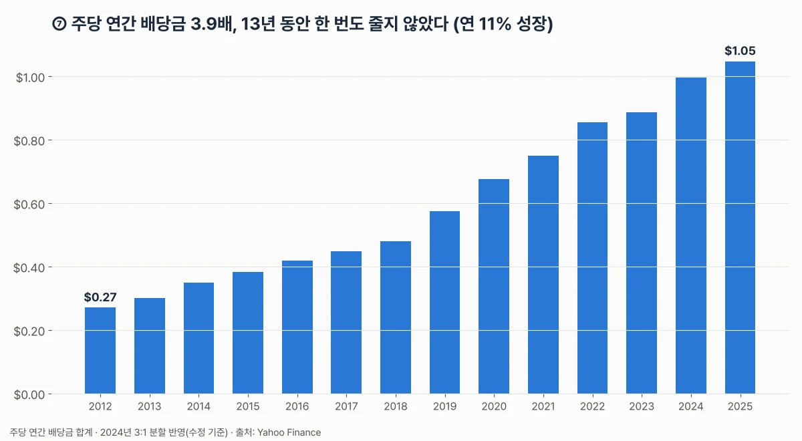
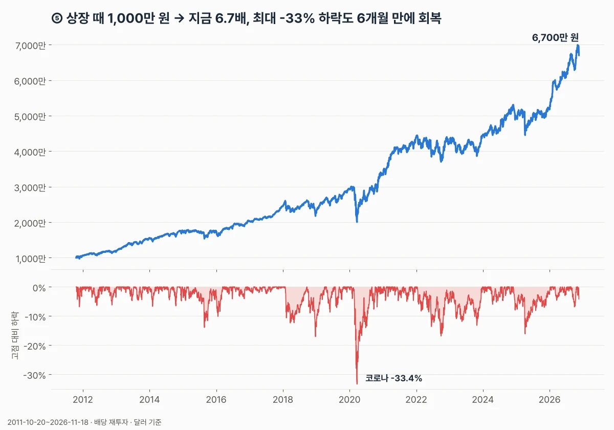
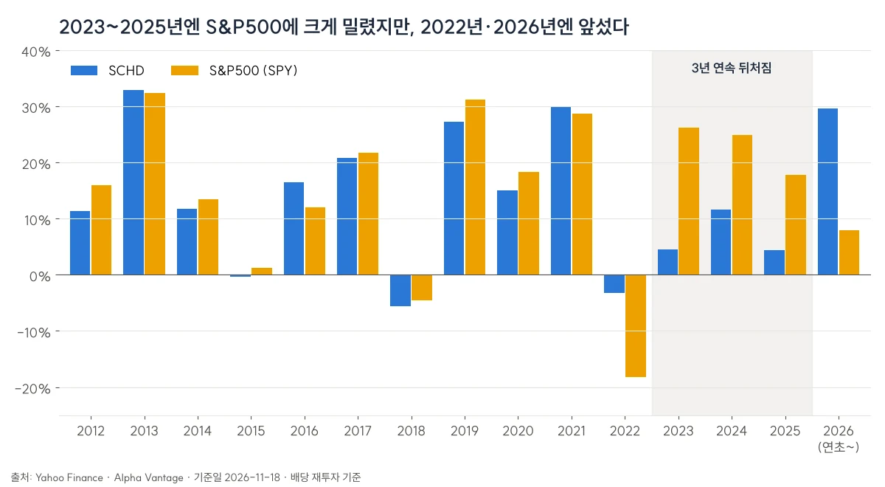
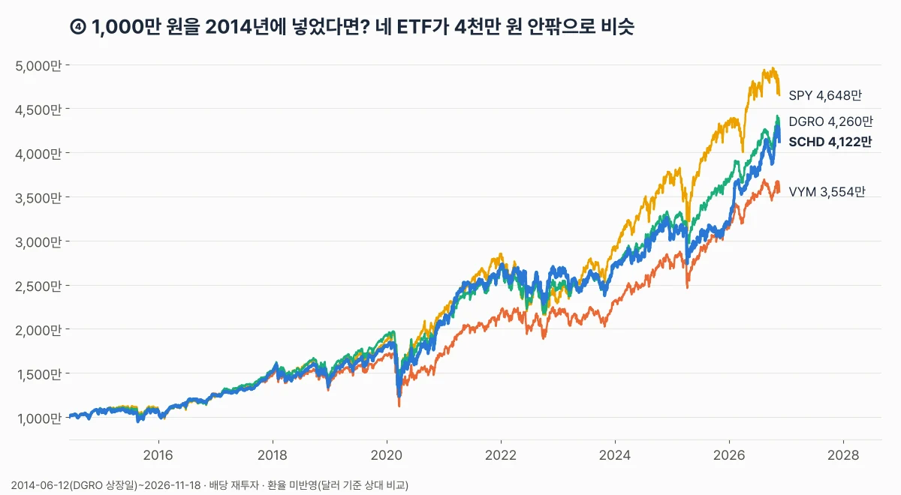
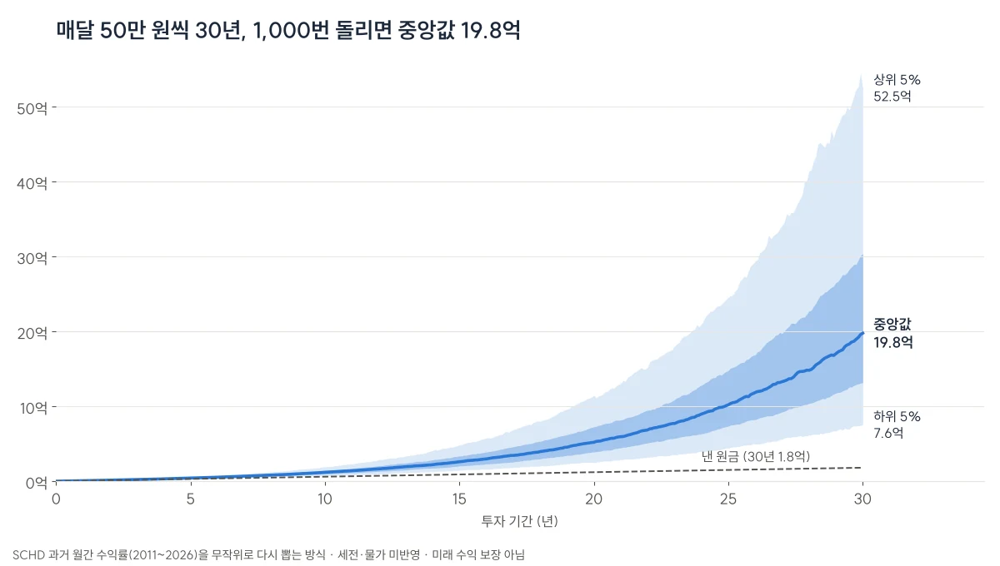
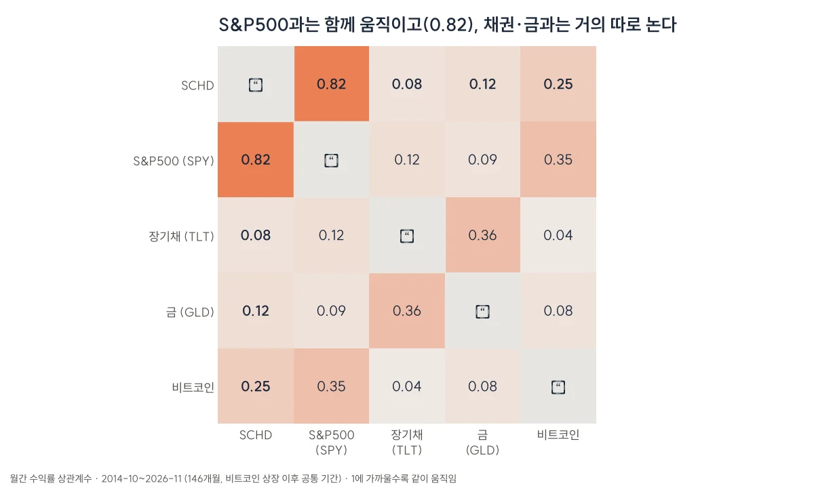
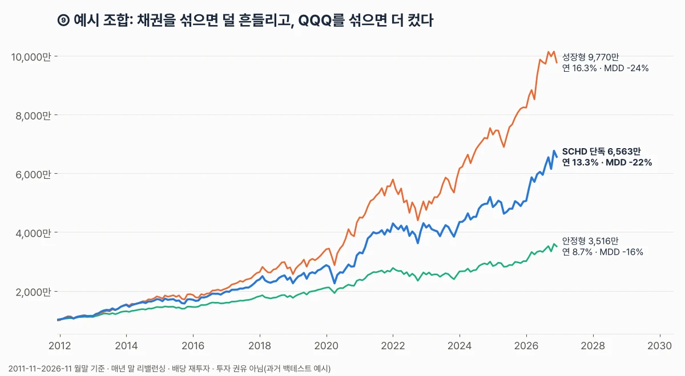

SCHD 배당률·배당금·단점 총정리 (2026) | 적립식 30년 투자하면 얼마?

SCHD는 배당 ETF 하면 가장 먼저 나오는 이름이에요.
저도 아직 사지 않았고, 사기 전에 15년 치 데이터를 직접 계산해 봤습니다. 좋은 점보다 단점을 먼저 알고 싶었거든요.
SCHD는 어떤 ETF인가요?
미국 찰스 슈왑이 2011년에 상장한 ETF로, 10년 이상 배당을 준 미국 우량 기업 100곳을 담습니다.
| 정식 이름 | Schwab U.S. Dividend Equity |
| 상장일 | 2011.10.20 |
| 총보수 | 연 0.06% |
| 배당 주기 | 분기 (3·6·9·12월) |
| 종목 수 | 약 100개 |
SCHD 배당금과 배당일
최근 1년 동안 주당 약 1.06달러를 받았고, 배당률로는 약 3.0%예요.
배당락일은 보통 3·6·9·12월 하순이고, 지급은 며칠 뒤입니다.
| 배당락일 | 주당 배당금 |
|---|---|
| 2025.12.10 | $0.278 |
| 2026.03.25 | $0.257 |
| 2026.06.24 | $0.253 |
| 2026.09.23 | $0.267 |

제가 SCHD에서 가장 끌린 부분이에요.
주당 배당금이 13년 동안 한 번도 줄지 않고 3.9배가 됐습니다. 오래 들고 있을수록 산 가격 대비 배당률이 올라가요.
SCHD 구성 종목과 섹터

한 종목이 5%를 넘지 않게 고르게 담겨 있어요.

필수소비재·헬스케어·에너지가 절반이고, 기술주는 12%뿐입니다. 이 숫자가 뒤에 나올 단점과 바로 이어져요.
SCHD 연평균 수익률과 10년 수익률

| 상장 이후 연평균 | 13.4% |
| 최근 10년 연평균 | 13.1% (S&P500 14.6%) |
| 원화 환산 연평균 | 14.7% |
| 최대 낙폭 | -33.4% (6개월 만에 회복) |
상장 때 넣은 1,000만 원은 지금 약 6,700만 원이 됐어요.
SCHD 단점: 3년 연속 S&P500에 밀렸다

솔직히 가장 아쉬운 부분이에요. 2023~2025년 3년 연속 S&P500에 크게 밀렸습니다.
2023년에 S&P500이 26% 오를 때 SCHD는 4.5%에 그쳤어요. 기술주가 적어 AI 상승장을 거의 못 탔기 때문입니다.
반대로 2022년 하락장에선 -3%로 버텼고, 2026년엔 다시 앞서고 있어요.
- 성장장에서는 S&P500보다 덜 오른다
- 분기 배당이라 매달 현금흐름엔 아쉽다
- 환율과 배당세 15%를 같이 신경 써야 한다
SCHD vs DGRO·VYM 비교

| 2014.6~ | 연평균 | 배당률 | 최대 낙폭 |
|---|---|---|---|
| SCHD | 12.1% | 3.0% | -33.4% |
| DGRO | 12.4% | 1.9% | -35.1% |
| VYM | 10.7% | 2.3% | -35.2% |
수익률은 비슷하지만, SCHD가 배당률이 가장 높고 덜 빠졌어요.
연금저축·ISA로 같은 지수에 투자하는 방법은 「SCHD vs TIGER 미국배당다우존스」 글에서 따로 정리할게요.
SCHD 적립식 30년 투자하면 얼마?
과거 월간 수익률을 무작위로 섞어 매달 50만 원씩 30년을 1,000번 돌려 봤어요.

| 30년 뒤 (원금 1.8억) | 평가액 |
|---|---|
| 하위 5% | 7.6억 |
| 중앙값 | 19.8억 |
| 상위 5% | 52.5억 |
중간쯤 되는 결과가 19.8억이고, 그 사이 한 번은 25~40% 하락을 겪는다고 보는 게 맞아요.
지난 15년이 특히 좋았던 기간이라 낙관적인 숫자예요. 연 8%로 보수적으로 잡으면 약 7.5억입니다. 세금·물가는 빠져 있어요.
SCHD에 무엇을 섞을까?

SCHD는 S&P500과 0.82로 함께 움직이고, 채권·금과는 거의 따로 움직여요. 배당 ETF라고 하락장 방패는 아니라는 뜻이에요.

| 2011.11~ 예시 조합 | 연평균 | 최대 낙폭 |
|---|---|---|
| 안정형 SCHD 60 + 채권 40 | 8.7% | -15.7% |
| SCHD 단독 | 13.3% | -21.5% |
| 성장형 SCHD 50 + QQQ 50 | 16.3% | -24.1% |
저는 성장형 조합이 가장 눈에 들어왔어요. SCHD가 약했던 해를 QQQ가 메워 줬거든요.
정리
잘 맞는 분 · 배당이 늘어나는 걸 보며 오래 모을 분, 성장주 계좌에 안정감을 더하고 싶은 분
아쉬운 분 · 기술주 상승을 다 따라가고 싶은 분, 매달 현금흐름이 필요한 분
저는 "SCHD 하나로 끝"보다 성장주 옆에 두는 분산용이 맞다고 봤어요.
자주 묻는 질문
월 배당 100만 원 받으려면 얼마가 필요한가요?
배당률 3.0%에서 배당세 15%를 빼면 실수령은 약 2.6%예요. 연 1,200만 원을 받으려면 약 4.6억 원이 필요합니다.
연금저축이나 ISA로 살 수 있나요?
미국 상장이라 직접은 못 사요. 같은 지수를 따르는 국내 상장 미국배당다우존스 ETF로 대신할 수 있어요.
배당금에 세금은 얼마나 붙나요?
미국에서 15%를 떼고 들어와요. 보통 추가 세금은 없지만, 금융소득이 연 2,000만 원을 넘으면 종합과세 대상입니다.
다음에 읽을 글
- SCHD vs TIGER 미국배당다우존스연금저축·ISA로 SCHD에 투자하는 법 · 곧 공개
- SCHD vs DGRO, 배당 성장 ETF 비교곧 공개
- 몬테카를로 시뮬레이션 읽는 법이 블로그 숫자를 읽는 방법 · 곧 공개
출처: Schwab Asset Management, Yahoo Finance, Alpha Vantage(구성 종목 2026.11.13 기준). 수익률은 배당 재투자 기준으로 직접 계산했습니다.
이 글은 정보 제공 목적이며 투자 권유가 아닙니다. 과거 수익률과 시뮬레이션은 미래를 보장하지 않습니다. 면책 고지